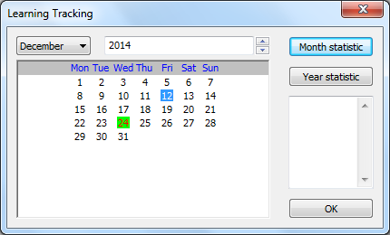
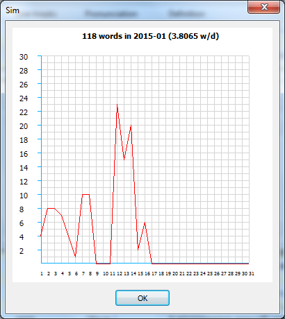

User Guide
This document explains how to use the functions in SIM application.
Main screen - buttons
The table below describes the functionality of buttons on main screen. Top
| Button |
Description |
 |
Add a new word. |
 |
Delete a selected word. |
 |
Listen the pronunciation of selected word. |
 |
View definitions of of selected word. |
 |
Track your new word learning. |
 |
Test your vocabulary. |
 |
Manage the ordinary phrases. |
 |
Show definition/audio/image server information. |


|
Check whether the internet is connected. |
Main screen - overlay
This overlay displays some basic information of learned words. Top
- Date column: the date of adding this word.
- Word column: the learned word.
- Definition column: the first definition of this word.
 icon indicates that there is a pronunciation of this word.
icon indicates that there is a pronunciation of this word. icon indicates that there are some description images of this word.
icon indicates that there are some description images of this word.
Word definition
This dialog is opened by clicking button on main screen. It displays some description images and all definition of the word. It also allows user to choose another images from google image search results.Top
Learning tracking

This module allows users to track their learning period by clicking button. The learning date will be marked. The learned words at the selected date will be showed in the text box in the right of the dialog. The users can view a line chart of learned words in a month and a year by clicking 'Month static' and 'Year static' buttons. The results are showed as image below. Top

Test vocabulary
By the time, the users can forget many words that they learned. So, they can check their vocabulary by listening the pronounce of some learned words by clicking button. First, they need select a range of date (the number learned words having pronunciation will be showed). Second, it musts to select the number of test words as the time interval between two pronunciations. The parameter configuration is now finished. The users start the test by clicking  . A led clock will count down the time remaining. The users need to fill the word that they hear in the 'You hear' text box. In the last remaining second, the word answer will appear. At the end of the test, the users can see their result. Moreover, they can be show the list of answer-correct words by clicking
. A led clock will count down the time remaining. The users need to fill the word that they hear in the 'You hear' text box. In the last remaining second, the word answer will appear. At the end of the test, the users can see their result. Moreover, they can be show the list of answer-correct words by clicking  button. To quit the test, please click the
button. To quit the test, please click the  button. Top
button. Top
Phrase/Topic

The users can manage (add/edit/delete) their learned ordinary phrases/topic by clicking button. The table below describes the functionality of buttons on phrase/topic screen. Top
| Button |
Description |
 |
Add a new phrase/topic. |
 |
Delete a selected phrase/topic. |
 |
View/Edit content of selected phrase/topic. |
|
Change learning language (French - English). |
 |
Change phrase/topic mode. |
|
Close dialog. |